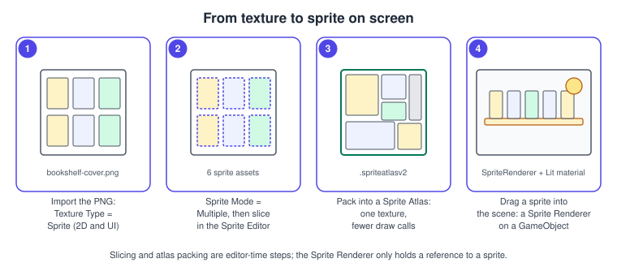
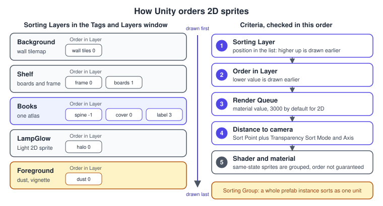
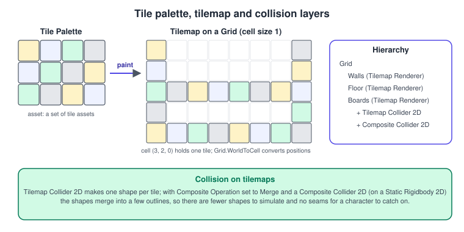
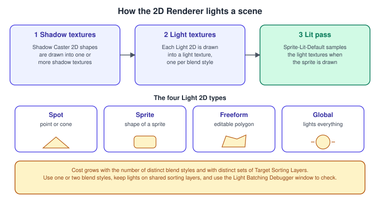

2D Games
|
This content was generated with the assistance of AI and should be verified against the official documentation before being relied on in production. |
Unity makes 2D games with the same engine, the same GameObjects and the same C# as 3D, and a handful of 2D-specific parts: sprites (textures with a pivot and a mesh), a sorting system that decides which sprite is in front, tilemaps for grid-based levels, a 2D renderer in the Universal Render Pipeline (URP) with 2D lights and shadows, and a 2D physics engine (2D Physics). This page covers everything except physics: how to bring art in, how to order and batch it, how to build a level out of tiles, how to light it, and how to keep pixel art crisp.
The facts were checked in November 2026. The documented version is Unity 6.3 LTS (6000.3); features added in Unity 6.4, 6.5 and 6.6 are called out where they matter and collected in the table near the end. The target platforms are all of Unity’s: the 2D features sit in URP and in packages, so they build for desktop, mobile, Web and consoles the same way as 3D content. In the running example the Bookshelf becomes a side-on 2D scene (a shelf, books cut from the shared textures, a hanging desk lamp that casts 2D light and shadow); the shared model bookshelf.glb is used at the end to show a 3D mesh rendered inside the 2D scene. The textures it was built from (cover, spine, pages and wood) are ordinary PNG files that import as sprites.


The pieces of a 2D project
A sprite is a 2D graphic stored as a rectangle of a texture, with a pivot (the point used for rotation and for sorting) and an optional custom outline and physics shape. A Sprite Renderer draws one sprite on a GameObject. A tile wraps a sprite for use on a Tilemap, which draws a whole grid of them with one renderer. Everything is drawn by the render pipeline in the same pass as 3D objects, with a sorting system tuned for transparent 2D content.
Set up a project
-
Install Unity 6.3 LTS with Unity Hub (see Getting Started: Hub and Editor).
-
Create a project from the Universal 2D template. It installs URP, selects the 2D Renderer and includes the 2D packages: 2D Animation, 2D Pixel Perfect, 2D PSD Importer, 2D Sprite, 2D SpriteShape and 2D Tilemap Editor.
-
For an existing 3D project, install the packages from the Package Manager, create a 2D Renderer asset and add it to the renderer list of the URP asset, then make it the default.
-
Optional but useful: Shader Graph, Cinemachine (Cameras and Cinemachine) and 2D Tilemap Extras.
The 2D template’s default sprite material is Sprite-Lit-Default, which reacts to 2D lights; the unlit alternative is Sprite-Unlit-Default. A sprite dragged from the Project window into the scene gets a Sprite Renderer with the lit material automatically. Materials made for the Built-in Render Pipeline do not react to 2D lights, and the Built-in pipeline is deprecated from Unity 6.5, so new 2D projects should start in URP (Render Pipelines Overview).
Importing sprites
An image becomes a sprite by setting Texture Type to Sprite (2D and UI) in its import settings (the 2D template does this by default for new imports). Sprite Mode then chooses how the texture is divided:
-
Single: the whole texture (or a part of it) is one sprite.
-
Multiple: the texture is a sheet; you define one rectangle (a
SpriteRect) per sprite in the Sprite Editor. Each sprite appears as a child asset of the texture in the Project window.
The settings that matter most for the look and cost of sprites:
| Setting | What it does |
|---|---|
Pixels Per Unit |
How many texture pixels equal one world unit. A 128-pixel-tall book at 100 pixels per unit is 1.28 units tall. Use the same value for all art in a scene, and match it in the Pixel Perfect Camera. |
Mesh Type |
Full Rect draws a quad; Tight draws a mesh around the opaque pixels, which saves fill rate for sprites with large transparent areas but adds vertices. |
Pivot (per sprite) |
Where the sprite rotates and, with Sprite Sort Point set to Pivot, where distance is measured for sorting. Put it at the feet of a character or the base of a book. |
Filter Mode |
Bilinear for smooth art, Point (no filter) for pixel art. |
Compression |
Pixel art is usually left uncompressed or at high quality; compressed formats blur sharp edges. Atlases can use their own compression. |
Read/Write |
Leave off unless scripts read pixels: it doubles the memory of the texture. |
Slice a sheet in the Sprite Editor
-
Select the texture in the Project window and make sure Texture Type is Sprite (2D and UI) and Sprite Mode is Multiple.
-
Select Sprite Editor. Use Slice to cut the sheet automatically (by transparent gaps, or as a grid by cell size or by cell count), or drag rectangles by hand.
-
Set the Pivot of each sprite (for a book, bottom centre) and, if needed, a border for 9-slicing.
-
Select Apply in the toolbar.
The Sprite Editor window also has a Custom Outline tab (a tighter render mesh), a Custom Physics Shape tab (the polygon that 2D colliders use) and a Secondary Textures tab (normal and mask maps for 2D lighting). Opening the Sprite Editor straight from the Sprite Renderer’s inspector is possible since Unity 6.

The Sprite Renderer
A Sprite Renderer has few properties, and each one matters:
-
Sprite: the asset drawn. Swapping it at runtime is the simplest sprite animation (see Animation and Mecanim).
-
Color: a multiplicative tint; white is no tint.
-
Flip X and Y: mirror the texture without moving the GameObject. To mirror children such as a collider as well, change the transform scale instead.
-
Draw Mode: Simple, Sliced (9-slice: corners keep their size) or Tiled (repeat the middle). Sliced and Tiled need a sprite with borders set, and expose a Size property.
-
Mask Interaction: how a Sprite Mask hides or reveals the sprite (None, Visible Inside Mask, Visible Outside Mask).
-
Sprite Sort Point: Center or Pivot, the point used for distance sorting.
-
Material: Sprite-Lit-Default unless you have a custom or Shader Graph material.
-
Sorting Layer and Order in Layer: the main way to control which sprite is in front (next section).
Sorting: who is in front
2D sprites usually sit on the same Z plane, so Unity needs rules to decide the drawing order. It applies them in this order, and the first difference decides:
-
Sorting Layer: the position in the list in the Tags and Layers window. Layers higher in the list are drawn first, so they appear behind.
-
Order in Layer (the sublayer): lower values are drawn first.
-
Render Queue of the material (3000 for the default 2D materials).
-
Distance to the camera: farther is drawn first. How distance is measured depends on the camera projection, the Transparency Sort Mode and, for sprites, the Sprite Sort Point.
-
Anything left (the same shader and material state) is grouped by Unity, in an order that is not guaranteed.

Source: Unity Manual: 2D rendering order
Create a sorting layer
-
Select a sprite and open the Sorting Layer dropdown in its Sprite Renderer (under Additional Settings), then choose Add Layer.
-
In the Sorting Layers list, select the Add (+) button. New layers go to the bottom of the list, which means in front.
-
Drag layers to reorder them. Assign sprites to the layer, and use Order in Layer inside it.
For the Bookshelf scene the layers are Background, Shelf, Books, LampGlow and Foreground. Inside Books the spine is at -1, the cover at 0 and the label at 3, so a label always draws over the cover of the same book.
Top-down and side-on depth
In a top-down or three-quarter game, sprites lower on the screen should be in front. There are two ways to get that:
-
Set Transparency Sort Mode to Custom Axis and Transparency Sort Axis to (0, 1, 0) on the 2D Renderer asset (in the Built-in pipeline the setting lives in the Graphics settings). Unity then measures distance along the Y axis, so a sprite higher in the world is farther away. Set Sprite Sort Point to Pivot so the feet decide, not the centre of the drawing.
-
Or set the sorting order from a script, which also works when you need a number you can inspect and debug:
using UnityEngine;
/// <summary>
/// Keeps a sprite in front of sprites that are higher in the scene, by writing
/// Order in Layer from the Y position of its pivot. Use one sorting layer for all
/// sprites that should interleave (for example "Books").
/// </summary>
[RequireComponent(typeof(SpriteRenderer))]
public class SortByY : MonoBehaviour
{
[SerializeField] private int unitsToOrder = 100; // order steps per world unit
[SerializeField] private int offset; // per-prefab tie-break
[SerializeField] private bool isStatic = true; // stop updating for scenery
private SpriteRenderer _renderer;
private void Awake()
{
_renderer = GetComponent<SpriteRenderer>();
Apply();
}
private void LateUpdate()
{
if (!isStatic) Apply();
}
private void Apply()
{
// Lower on the screen (smaller Y) means closer to the viewer, so a larger order.
_renderer.sortingOrder = offset - Mathf.RoundToInt(transform.position.y * unitsToOrder);
}
}Sorting Order is a 16-bit integer (-32768 to 32767), so keep unitsToOrder times the height of your level inside that range.
Sorting Groups
A Sorting Group component makes a GameObject and all its child renderers sort as one unit: the group is placed on one sorting layer and order, and the children sort among themselves inside it. Add one to the root of a character or a prefab with several sprites (a book with a spine, a cover and a label), so two instances of the prefab never interleave their parts. In URP 2D scenes the same component can sort 3D meshes with sprites when Sort as 2D is enabled (see the end of this page).
Sprite atlases
Every distinct texture used by a sprite is normally a separate draw (although the SRP Batcher reduces the cost of switching materials). A sprite atlas packs many sprites into one texture so that they share a draw call, and also lets you control compression and variants per group of sprites.
-
Create the atlas with Assets > Create > 2D > Sprite Atlas. Unity creates a
.spriteatlasv2asset (the V2 format is the default; V1 assets can be upgraded). -
Drag sprites, textures or folders onto Objects for Packing.
-
Select Pack Preview to see the packed texture.
-
Before packing, turn off Read/Write on the source textures unless scripts need it, and turn on Tight Packing to reduce transparent areas.
The guidance on how to split atlases is to make one per group of sprites that are used together (a scene, a level, a character), one per compression need (detailed characters versus simple scenery), and separate ones for frequently and rarely used sprites. One atlas holding everything wastes memory and defeats loading control; hundreds of tiny atlases defeat batching. Atlas variants make a lower-resolution copy for weak devices, and the Include in Build option controls whether the atlas ships automatically.
Source: Unity Manual: Sprite atlases
Late binding at runtime
If you turn off Include in Build, sprites still reference the atlas but its texture is missing until you provide it. Unity raises SpriteAtlasManager.atlasRequested with the atlas tag and a callback; you load the atlas (from Resources, an AssetBundle or Addressables, see
Assets, Addressables and Content) and pass it to the callback.
using System;
using UnityEngine;
using UnityEngine.U2D;
/// <summary>
/// Supplies sprite atlases that are excluded from the build. The atlas assets live in a
/// Resources folder and are named after the tag Unity requests (the atlas name).
/// </summary>
public static class BookAtlasProvider
{
// Runs before the first scene loads, so the handler exists when sprites ask for an atlas.
[RuntimeInitializeOnLoadMethod(RuntimeInitializeLoadType.BeforeSceneLoad)]
private static void Register()
{
// Subtracting first makes this safe when Unity does not reload the domain on entering Play mode.
SpriteAtlasManager.atlasRequested -= OnAtlasRequested;
SpriteAtlasManager.atlasRequested += OnAtlasRequested;
}
private static void OnAtlasRequested(string atlasTag, Action<SpriteAtlas> bind)
{
SpriteAtlas atlas = Resources.Load<SpriteAtlas>(atlasTag);
if (atlas == null)
{
Debug.LogWarning($"No sprite atlas named '{atlasTag}' found in Resources.");
return;
}
bind(atlas);
}
}Since Unity 6.4 an atlas can also be created at runtime with SpriteAtlasManager.CreateSpriteAtlas, and since 6.5 a 2D module in the Profiler shows how many sprites and which atlases are used in a frame.
Tilemaps
A Tilemap is a grid of tiles drawn by one Tilemap Renderer, which is much cheaper than a GameObject per tile. Three pieces are involved:
-
The Grid component defines the cell layout (rectangular, hexagonal with a point or flat top, or isometric) and the cell size. It sits on a parent GameObject; each child Tilemap shares it.
-
A Tile asset points to a sprite (and optionally a collider type and a color). Rule Tiles and animated tiles from the 2D Tilemap Extras package choose or animate the sprite from rules.
-
A Tile Palette is an asset holding tiles that you paint from, using the Tile Palette window (Window > 2D > Tile Palette). A tileset is a palette built automatically from a texture, which keeps the palette in sync with the source.

Paint a level
-
Create a palette: Assets > Create > 2D > Tile Palette, choose the layout (rectangular by default), then drag sprites or a texture onto the Tile Palette window.
-
In the Hierarchy, right-click and choose a tilemap type (2D Object > Tilemap > Rectangular). Unity creates a Grid with one child Tilemap.
-
Open the Tile Palette window, set Active Target to the tilemap, select the Paint with Active Brush tool, pick a tile and paint in the Scene view. Hold Ctrl (Cmd on macOS) and click a tile in the scene to pick it up.
-
Use several tilemaps on one grid for layers (walls, floor, decoration), each with its own sorting layer and order.
Collision on a tilemap
Add a Tilemap Collider 2D to the tilemap to give each tile a collider shape (green outlines in the Scene view). For a tile that should not collide, set its Collider Type to None; for a custom shape, edit the sprite’s Custom Physics Shape. A collider per tile is expensive and leaves tiny seams where a character can catch: add a Composite Collider 2D, set Composite Operation to Merge on the Tilemap Collider 2D, and the tile shapes merge into a few outlines (the composite uses a Rigidbody 2D, which should be Static for level geometry). Collision response itself belongs to 2D Physics.
Build and query tiles from code
The next script builds the boards of the Bookshelf from a single tile asset and answers "which tile is under this world position". It writes the whole block with one SetTilesBlock call, which is much faster than calling SetTile in a loop because Unity refreshes the tilemap once.
using UnityEngine;
using UnityEngine.Tilemaps;
[RequireComponent(typeof(Tilemap))]
public class ShelfBoardPainter : MonoBehaviour
{
[SerializeField] private TileBase boardTile;
[SerializeField] private int columns = 8;
[SerializeField] private int rows = 7;
[SerializeField] private int rowsBetweenBoards = 2;
private Tilemap _tilemap;
private void Awake()
{
_tilemap = GetComponent<Tilemap>();
Build();
}
/// <summary>Fills one row of tiles every <c>rowsBetweenBoards</c> rows.</summary>
public void Build()
{
_tilemap.ClearAllTiles();
var area = new BoundsInt(0, 0, 0, columns, rows, 1);
var tiles = new TileBase[columns * rows];
for (int y = 0; y < rows; y++)
{
if (y % rowsBetweenBoards != 0) continue;
for (int x = 0; x < columns; x++)
{
tiles[x + y * columns] = boardTile;
}
}
_tilemap.SetTilesBlock(area, tiles);
}
/// <summary>Returns the tile under a world position, or null when the cell is empty.</summary>
public TileBase GetTileAt(Vector3 worldPosition)
{
Vector3Int cell = _tilemap.WorldToCell(worldPosition);
return _tilemap.GetTile(cell);
}
}Source: Unity Scripting API: Tilemap
Hexagonal and isometric tilemaps use the same API; only the Grid layout changes, and CellToWorld and WorldToCell account for it. On isometric tilemaps the Mode of the Tilemap Renderer (Chunk, Individual or SRP Batch) decides how tiles are sorted and batched; with the SRP Batcher
use Individual or SRP Batch, because Chunk mode is not compatible with it.
Source: Unity Manual: Isometric tilemaps
2D lights and shadows
With the 2D Renderer, a scene is lit by Light 2D components, not by 3D lights, and the lighting is not physically based: it is an art tool for mood. There are four light types: Spot (a cone or a point), Sprite (the light has the shape of a sprite), Freeform (an editable polygon) and Global (everything, no attenuation; one per blend style and sorting layer).
-
Right-click in the Hierarchy and choose Light > Spot Light 2D (or another 2D light type).
-
Set colour, intensity, inner and outer radius (spot), and Falloff. 2D lights do not need to be moved in Z: they affect objects regardless of distance in Z.
-
Set Target Sorting Layers to restrict which sorting layers the light affects. Since Unity 6.6 rendering layers can be used for the same purpose.
-
Enable Volumetric and a Volume Intensity above zero to draw visible light in empty space (the beam of the lamp).
-
Add a Shadow Caster 2D to GameObjects that should block the light and enable Shadows on the light. Sprites, colliders and sprite shapes can be shadow sources; the Composite Collider 2D can feed one.
Unity renders 2D lighting in three stages: shadow shapes are drawn into shadow textures, light shapes into light textures (one set per blend style), and finally the sprites are drawn using the textures. By default it tries to render all light and shadow textures before the sprites.

Blend Style decides how light combines with the sprite colour (the Renderer 2D asset defines the blend styles that are available); every blend style costs another light texture, so use one or two. Overlap Operation chooses between adding overlapping lights (the default) and alpha blending them, with Light Order deciding which is in front.
Source: Unity Manual: Blend 2D lights
Normal maps and mask maps on sprites
To make bumps and scratches catch the 2D light, add a normal map as a secondary texture of the sprite in the Sprite Editor (Secondary Textures tab); a mask map controls which areas receive light, for highlights or rim lighting. Secondary textures add a depth pre-pass per layer batch that renders a full-size texture, so they cost performance. Keep the number of secondary textures the same across sprites that share an atlas, otherwise the combined secondary texture has a lot of empty space.
A flickering desk lamp
using UnityEngine;
using UnityEngine.Rendering.Universal;
/// <summary>
/// Gives the Bookshelf's desk lamp a slow, natural flicker by driving Light 2D intensity
/// from Perlin noise. The seed makes two lamps flicker differently.
/// </summary>
[RequireComponent(typeof(Light2D))]
public class LampFlicker : MonoBehaviour
{
[SerializeField] private float baseIntensity = 1.2f;
[SerializeField] private float amount = 0.15f;
[SerializeField] private float speed = 2.5f;
private Light2D _light;
private float _seed;
private void Awake()
{
_light = GetComponent<Light2D>();
_seed = Random.value * 100f;
}
private void Update()
{
float noise = Mathf.PerlinNoise(Time.time * speed, _seed); // 0 to 1
_light.intensity = baseIntensity + (noise - 0.5f) * 2f * amount;
}
}If scripts live in an assembly definition, add a reference to the URP runtime assembly (Unity.RenderPipelines.Universal.Runtime) to use Light2D. Scripts in the default assembly see it automatically.
Light batching
Every distinct combination of target sorting layers and blend styles can cost extra textures. The Light Batching Debugger window (opened from the Window menu) shows how lights are grouped into batches and why a batch was split, so you can rearrange sorting layers to merge them. Since 6.6 you can also strip the 2D light shader variants a project does not use.
Pixel-perfect rendering
Pixel art blurs or shimmers when sprites move by fractions of a pixel, or when the camera shows a non-integer number of screen pixels per sprite pixel. The Pixel Perfect Camera component (included with the Universal 2D template, do not install the separate 2D Pixel Perfect package, which works only in the Built-in pipeline) fixes this:
| Property | Meaning |
|---|---|
Asset Pixels Per Unit |
Must equal the Pixels Per Unit of all the sprites in the scene. |
Reference Resolution |
The resolution the art was drawn for (for example 320 by 180). The camera then shows exactly that many sprite pixels. |
Crop Frame |
None, Pillarbox, Letterbox, Windowbox or Stretch Fill: how to handle screens with another aspect ratio. |
Grid Snapping |
None, Pixel Snapping (sprites are rendered aligned to the pixel grid, their transforms unchanged) or Upscale Render Texture (render to a texture of the reference resolution, then upscale). |
Filter Mode |
Point keeps pixels sharp but can shimmer; Retro AA smooths the edges and reduces shimmer when stretching. |
Set the sprites to Point filter and no compression, add the component to the main camera, set the two values and check the Current Pixel Ratio it reports (2:1 means every sprite pixel is two screen pixels wide).
3D models in a 2D scene
The 2D Renderer can draw a Mesh Renderer or Skinned Mesh Renderer together with sprites (added in Unity 6.3). A 3D object created in a 2D URP project gets the Mesh2D-Lit-Default material, which is compatible with 2D lights; custom materials need a shader that supports 2D, for example one from Shader Graph (Shader Graph and HLSL). To make meshes sort like sprites instead of intersecting, add a Sorting Group and enable Sort as 2D; then Sorting Layer and Order in Layer decide the order. Enabling it clears the object’s depth information, so it cannot be combined with post-processing that needs depth.
-
Import bookshelf.glb and drag it into the 2D scene.
-
Set its materials to Mesh2D-Lit-Default (or a Shader Graph material built for 2D lights).
-
Add a Sorting Group on the root, enable Sort as 2D, and put it on the
Shelfsorting layer.
Bookshelf in 2D
The 2D variant of the running example uses the same assets, in a different style:
-
A Universal 2D project with a
Backgroundtilemap for the wall (the wood texture as a tileset) and aShelftilemap for the boards, with Tilemap Collider 2D and Composite Collider 2D on the boards. -
A
Bookprefab (spine, cover and label sprites under a root with a Sorting Group), tinted per book with the Sprite Renderer colour so one atlas serves all books. -
A Spot Light 2D on the desk lamp with volumetric light and a Shadow Caster 2D on the books, and the
LampFlickerscript. -
A Pixel Perfect Camera if the books are drawn at low resolution, otherwise a Cinemachine camera.
The catch-the-falling-books game of the other sub-sections works the same way here: books are Rigidbody 2D objects pooled with UnityEngine.Pool (see Project Architecture and Design Patterns).
Common mistakes
-
Sprites of one sorting layer flicker in front of each other. They have the same layer, order and distance. Give them different orders, a Sorting Group, or a Custom Axis sort mode.
-
Sprites do not react to the 2D light. The material is not a 2D-lit one (a Built-in material, or Sprite-Unlit-Default), or the light’s Target Sorting Layers excludes the sprite’s layer.
-
Seams or ghost collisions on tilemaps. One collider per tile; use Composite Collider 2D.
-
Blurry pixel art. Bilinear filtering, compression, or a Pixel Perfect Camera whose Asset Pixels Per Unit differs from the sprites.
-
Blank sprites in a build after excluding an atlas. Include in Build is off and nothing binds the atlas.
-
Many lights slow the game. Many blend styles or many different Target Sorting Layers create many light textures.
-
Pivot at the centre for characters. Sorting by Pivot then places characters by their middle, so they overlap scenery wrongly; move the pivot to the feet.
Performance notes
-
Use atlases and one material per group of sprites so the SRP Batcher and sprite batching can merge draws; check with the Frame Debugger and the Profiler (Profiling and Optimization).
-
Overdraw dominates 2D cost on mobile: large transparent sprites are drawn in full. Tight meshes and cropped sprites reduce it.
-
Prefer tilemaps to thousands of Sprite Renderers, and merge static colliders with a Composite Collider 2D.
-
Turn off Read/Write on textures, and use the lowest atlas size that fits.
-
2D lights, shadows and secondary textures are the expensive features; budget them as you would real-time shadows in 3D.
What changed recently
| Version | Change |
|---|---|
Unity 6.0 |
SRP batching for 2D renderers; soft shadows for 2D lights and shadows for sprites, colliders and sprite shapes; the Sprite Editor opens from the Sprite Renderer; Composite Collider 2D can combine colliders with Merge, Intersect, Difference or Flip operations. |
Unity 6.3 LTS |
The 2D Renderer draws Mesh Renderers and Skinned Mesh Renderers with sprites; low-level 2D physics APIs based on Box2D v3. |
Unity 6.4 |
Custom render passes for the 2D Renderer in URP; sprite atlases can be created at runtime. |
Unity 6.5 |
Custom 2D light types and shadow shapes; a 2D module in the Profiler; |
Unity 6.6 |
Rendering layers for choosing which GameObjects a 2D light affects; stripping of unused 2D light shader variants; Tile Palette filters and locks; sprites with GPU skinning can cast 2D shadows. |
Source: Unity Manual: What’s new in Unity 6.3 and the 6.6 release notes
Where the books are outdated
Unity in Action, 3rd edition (UIA) builds its 2D game in chapters 5 and 6, on Unity 2020.3 with the Built-in pipeline:
-
The book’s sprites use the Built-in pipeline’s default sprite material and no 2D lights; new projects use the Universal 2D template with the 2D Renderer, Sprite-Lit-Default and Light 2D, and the Built-in pipeline is deprecated since 6.5.
-
Sprite atlases in the book’s era were V1 assets; V2 (
.spriteatlasv2) is the default now. -
The tilemap and sorting workflows are unchanged in principle, but the Tile Palette window was reworked (tilesets, brush picks, filtering) and sorting now has Sorting Groups and Custom Axis guidance in the 2D Renderer asset.
-
Physics code in those chapters uses
Rigidbody2D.velocity; in Unity 6 the property islinearVelocity(see 2D Physics), and input code uses the legacy Input Manager instead of the Input System (Input System).
See also
-
General concepts: Scene Graphs and Asset Formats, Textures, Sampling and Mipmaps, Transparency, Blending and Post-Processing, Physics, Audio and Input Basics and Performance and Profiling.
-
Unity: 2D Physics, URP in Depth, Materials, Textures and Lighting, Particles and VFX Graph, Animation and Mecanim, Cameras and Cinemachine and Prefabs and Scenes.